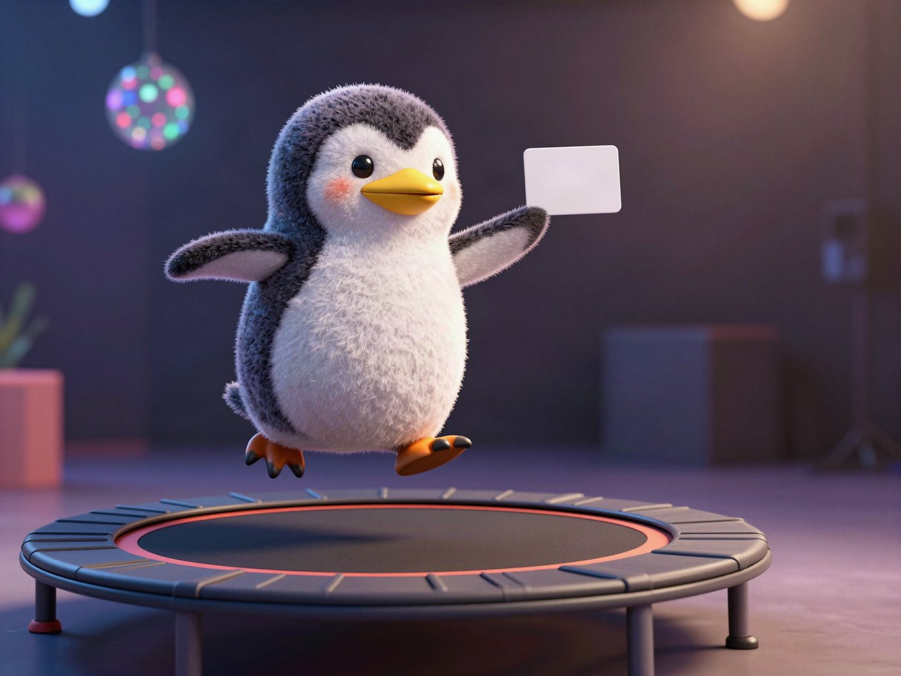
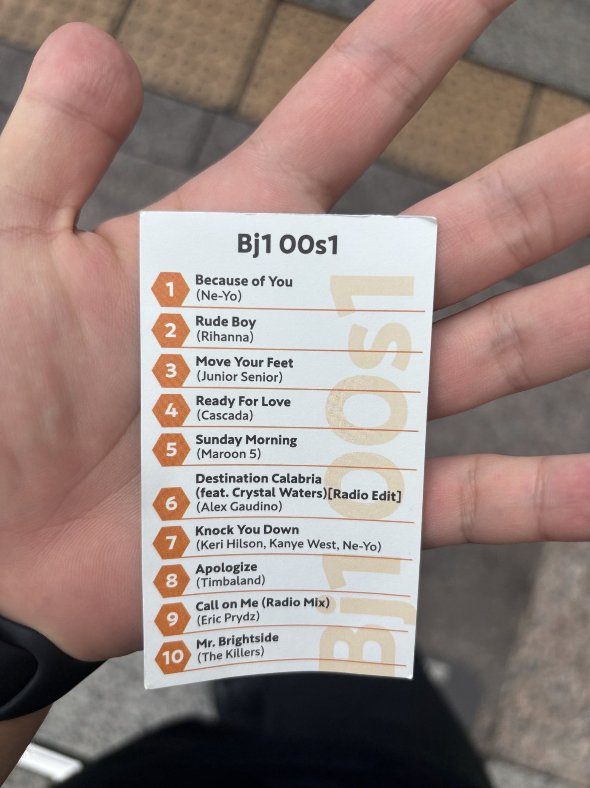

🐧 EVERYDAY LIFE⚡ 32 SEC
The music card from JUMP ONE was mostly from the 2000s 🎵

Music Card
At the trampoline gym JUMP ONE, I got a music card!

10 Songs
At JUMP ONE, we always jump and exercise on a trampoline to 10 songs.
The list of those songs is this card.
This is a gym where you jump and dance to songs like these.
Mostly 2000s
Maybe because there are many people in their 30s to 50s, I feel there are many songs from the 2000s.
For now, I feel there are only a few super new songs from 2020 or later.
Time Travel
Every time I jump, I feel like I am time traveling to the 2000s.
PREVIOUS POST
I leave the gym after 5 minutes, but I could jump for 45 minutes at a trampoline gym